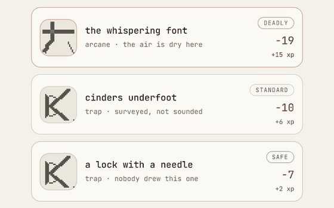
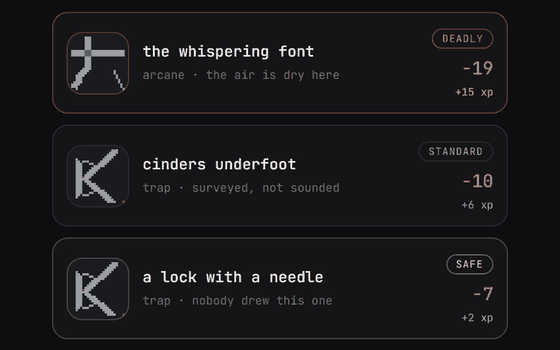

Marketing measurement
Most campaigns that looked worth scaling only looked good in hindsight.
Read the case →Hi, I’m Juan · Demand generation marketer in Houston
For six-plus years I’ve planned digital ads, fixed the reports that judge them, and helped Sales see which leads deserve attention.
Today I run demand generation at Houghton Mifflin Harcourt, where I’ve been promoted twice since 2022. On the side I build things I enjoy: a gaming clips channel, a daily dungeon game, and a few research experiments. Each one shows what happened, including what didn’t work.

Six-plus years across agency and in-house teams: planning where the budget goes, checking whether the report is telling the truth, and handing Sales the leads worth a call.
Some are marketing questions, some are research, and some are just things I wanted to exist. Pick any one; each makes sense on its own.
See all five projects →Most campaigns that looked worth scaling only looked good in hindsight.
Read the case →It reads hundreds of demand gen job posts to see what the market asks for.
See the scan →A gaming clips channel that drew 47.4K views in its first 28 days.
See the video system →

In a public dataset of 675 campaigns, most of the credit for results arrived after the budget decision was made and got filed back into the old report. I built a check for what was actually known on decision day, wrote the plan down first, then tried hard to break the result.
I’m from Houston, the oldest in my family and the first to go to college, and I learned early to figure things out without a perfect playbook. At work I’ve planned six-figure ad investments, managed $65k+ monthly budgets, led a team of four, and tied marketing to multi-million-dollar sales targets.
I like talking shop about measurement, paid media, and the things I build on the side. LinkedIn messages reach me fastest.
Or start with the project tour or more about me.